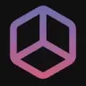
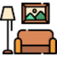

Q
QriginalsГенерация изображений
Сравнивать «Qriginals» с другими инструментами раздела «Генерация изображений» удобнее на одинаковом исходном материале.
Раздел «Для дизайнеров»: варианты ИИ для этой задачи, описания возможностей и переходы к обзорам. Сравните несколько решений на одинаковом примере.
Подготовьте визуальную идею баннера для новой коллекции посуды. Передайте палитру бренда, формат и главный предмет; оцените иерархию композиции и свободную область под текст, прежде чем собирать финальный рекламный макет с проверенными надписями.
Создай концепт баннера коллекции посуды: пастельный зелёный фон, чашка крупным планом слева, мягкая предметная тень. Справа оставь свободное пространство для текста, букв и логотипов не рисуй.
Сравнивать «Qriginals» с другими инструментами раздела «Генерация изображений» удобнее на одинаковом исходном материале.
«Text to Image Editor» перерабатывает формулировки написанного текста.
Upscale.media увеличивает изображения с помощью ИИ и автоматизирует эту обработку. Набор также ориентирован на массовую подготовку цифровых материалов. Основной сценарий связан с получением более крупной версии исходника; при сравнении результата стоит проверять мелкие детали, чтобы увеличение размера не воспринималось как подтверждение неизвестного содержимого снимка.
«Weblium» помогает собрать сайт или веб-приложение.
Сравнивать «Wegic - Website builder» с другими инструментами раздела «Конструкторы сайтов и лендингов» удобнее на одинаковом исходном материале.
«Николай Иронов» подготавливает варианты логотипов.
«3DPresso» подготавливает трёхмерные объекты.
«AI Photo Editor (aiphotoeditor.ai)» помогает исправлять и оформлять фотографии.
Для «AI-powered 3D Marketplace» сначала определите свою задачу и требуемый результат. Карточка относится к направлению «3D».
«Aida» помогает собрать сайт или веб-приложение.
«Al art academy» работает с графическими задачами дизайна.
«Archi» готовит визуальные материалы по заданию. Дополнительно «Archi» помогает представить оформление помещения.
Brandmark помогает рассматривать варианты знака и оформления бренда. Итоговый логотип нужно выбирать с учётом читаемости, назначения и прав на используемые элементы.
Для «CarConceptsAI» сначала определите свою задачу и требуемый результат. Карточка относится к направлению «Генерация изображений».
CPUmade создаёт варианты оформления футболок с помощью ИИ по описанию и предпочтениям пользователя. Можно просматривать дизайны сообщества и следить за выбранными авторами. Сервис объединяет персональную подготовку изображения для одежды и знакомство с новыми работами участников творческой платформы.
«CSM 3D» подготавливает трёхмерные объекты.
«DesignCode UI» представлен в разделе «Дизайн». При выборе проверьте нужную операцию и условия работы с результатом.
«Eye for AI» готовит визуальные материалы по заданию.
«hatchful» подготавливает варианты логотипов.
«Imageeditor» готовит визуальные материалы по заданию. Дополнительно «Imageeditor» помогает исправлять и оформлять фотографии.

Interior AI относится к инструментам, которые помогают искать решения для пространства. Ещё одно направление работы: получать изображения из словесного задания.
«Kiri.art» готовит визуальные материалы по заданию.

Kittl относится к инструментам, которые помогают получать изображения из словесного задания. Ещё одно направление работы: собирать видеосцену по описанию или визуальному исходнику.
«LalaLand AI» создаёт портретные и аватарные изображения.
«logomaster.ai» подготавливает варианты логотипов.
«M00D Ritual» готовит визуальные материалы по заданию.
Для «Magic Prints» сначала определите свою задачу и требуемый результат. Карточка относится к направлению «Дизайн».
Magnific Sketch to Image превращает эскиз в изображение с помощью ИИ. Можно начать с наброска, добавить фигуры или иконки и описать желаемую сцену. Сюда ведёт прежний адрес Freepik Pikaso.
«Modyfi» помогает исправлять и оформлять фотографии.
«Patterned AI» представлен в разделе «Генерация изображений». При выборе проверьте нужную операцию и условия работы с результатом.
«Poly» подготавливает текстуры для визуальных объектов.
«Ponzu» подготавливает текстуры для визуальных объектов.
Для «Product Design Studio» сначала определите свою задачу и требуемый результат. Карточка относится к направлению «Генерация изображений».
Spread AI создаёт изображения через облачный набор ИИ-инструментов без локальной установки. В процессе можно использовать настраиваемые средства и ограничительную рамку для управления областью генерации. Продукт связывает подготовку визуального результата с пространственным ограничением запроса, позволяя задавать не только содержание изображения, но и участок работы.
Сравнивать «This Person Not Exist» с другими инструментами раздела «Генерация изображений» удобнее на одинаковом исходном материале.
Для «Turbologo» сначала определите свою задачу и требуемый результат. Карточка относится к направлению «Дизайн».
«Vector to 3D» работает с векторной графикой.
Сравнивать «Yesicon» с другими инструментами раздела «Дизайн» удобнее на одинаковом исходном материале.
«НейроХолст» готовит визуальные материалы по заданию.
«Adobe Illustrator AI» работает с векторной графикой.
«AI Designer» готовит визуальные материалы по заданию. «AI Designer» также помогает исправлять и оформлять фотографии.
«AImyINTERIOR» помогает представить оформление помещения.
«ChatDesigner» готовит визуальные материалы по заданию. «ChatDesigner» также помогает исправлять и оформлять фотографии.

«Decoratly» помогает представить оформление помещения.
«Designer Clone AI» готовит визуальные материалы по заданию.
Flair создаёт визуальные материалы для маркетинга с учётом брендового оформления. Набор возможностей охватывает фотографии, контент, рекомендации и настраиваемые параметры. Инструмент помогает работать с образом бренда через генерируемую графику, позволяя задавать оформление и получать варианты материала для его дальнейшего представления.
Freemidjourney генерирует изображения по текстовому запросу с использованием ИИ. Пользователь формулирует словесную идею, которая становится основой визуального результата. При выборе картинки полезно сверять основной сюжет, предметы и детали с исходным описанием, рассматривая полученную версию как вариант заданного образа, а не самостоятельное подтверждение фактов.
«Imagine 3D» представлен в разделе «Генерация изображений». При выборе проверьте нужную операцию и условия работы с результатом.
Страница 5 из 8